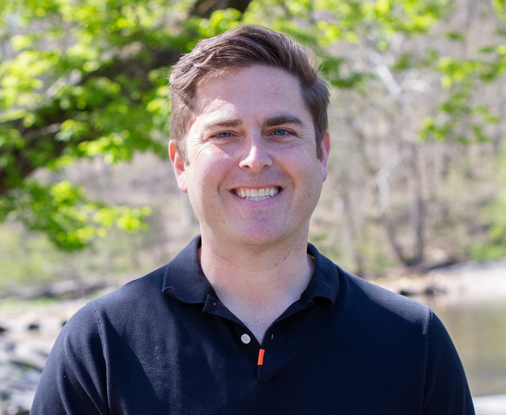

SOBRE NOVA
ARRAIGADOS A NUESTRA TRADICIÓN DE LEVANTAR TROFEOS E INSPIRADOS POR NUESTRA PASIÓN POR LA VICTORIA.
SOMOS NOVA
Entertainment & Sports es una empresa conjunta global de deportes electrónicos que posee y opera el exitoso equipo NOVA League of Legends (LoL) Champions Korea (LCK), junto con equipos en segmentos de juegos competitivos que incluyen Valorant, Rocket League Y COUNTER-STRIKE 2. Aprovechando el rico legado de SKT NOVA, NOVA expandirá sus equipos a nivel mundial, celebrará nuevas victorias y creará aún más oportunidades para que los fanáticos adopten la cultura de juego, el contenido y los jugadores de NOVA en todos los rincones del mundo.
Nuestro Líder:

JOE MARSH - CEO
Joe Marsh es el director ejecutivo de NOVA Entertainment & Sports, una empresa conjunta global de esports creada por Comcast Spectacor y SK Telecom en octubre de 2019. Supervisa las operaciones con sede en Seúl, Filadelfia y Los Ángeles, y es responsable del crecimiento y la optimización de la presencia global de NOVA, así como de su expansión hacia nuevos negocios y fuentes de ingresos relacionados con la cultura y el estilo de vida de los videojuegos competitivos, el contenido y el merchandising. Anteriormente, Joe fue director comercial de la división Spectacor Gaming de Comcast y de la franquicia de esports Philadelphia Fusion, que compite en la Overwatch League. En 2018, Joe fue nombrado vicepresidente y director financiero de Fusion, supervisando directamente las finanzas del equipo, incluyendo el presupuesto, la previsión y la planificación a largo plazo. Antes de unirse a Spectacor Gaming y Philadelphia Fusion, Joe ocupó varios puestos financieros en Comcast Spectacor, donde fue responsable del desarrollo, la coordinación, la consolidación y la comunicación de las funciones anuales de presupuestación, planificación a largo plazo y previsión de los negocios principales de Comcast Spectacor. Joe se graduó en Marketing por la Universidad de Millersville y posteriormente obtuvo un MBA en Finanzas, Análisis y Gestión Estratégica por la Universidad de Villanova. Actualmente, Marsh se desempeña como asesor estratégico de Spectacor Gaming, G4tv y Philadelphia Fusion. Anteriormente, Joe fue miembro de la junta directiva de Nerd Street Gamers. Joe vive en el área de Filadelfia con su esposa Kelly y sus hijas Caden y Colbie.